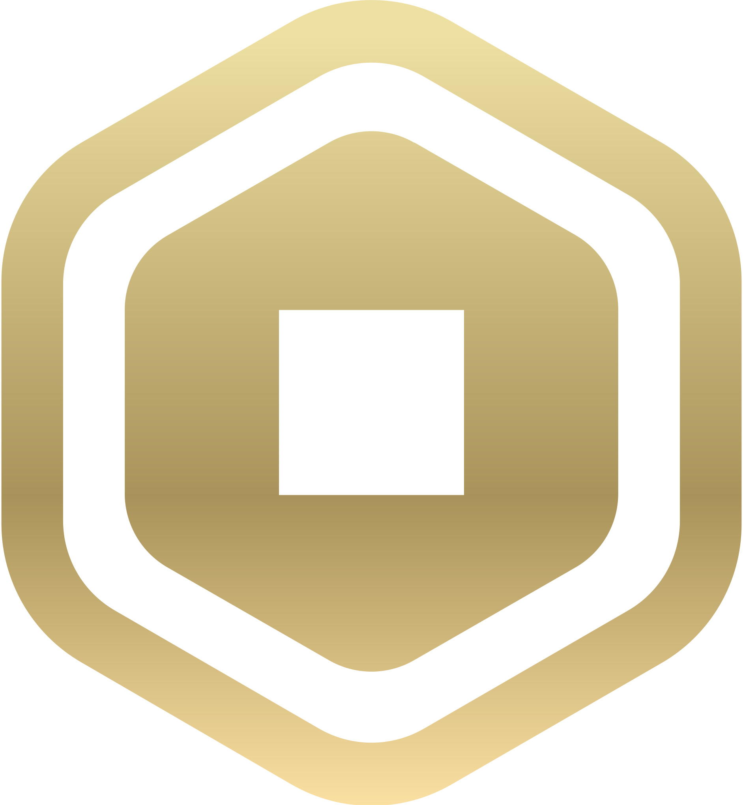

Explora el Mundo de Roblox
Historia de Roblox
Roblox es una plataforma de videojuegos en línea que permite a los usuarios crear, compartir y jugar juegos creados por otros. Fue desarrollada por David Baszucki y Erik Cassel, quienes comenzaron a trabajar en el proyecto en 2003. En ese entonces, ambos estaban interesados en la física y la simulación educativa, lo que los llevó a crear una plataforma que permitiera a los usuarios experimentar con la creación y el aprendizaje a través del juego.
La primera versión oficial de Roblox se lanzó en 2006, y en ese momento no era muy conocida. Al principio, el sitio tenía gráficos sencillos y una comunidad pequeña, pero lo que lo hacía especial era que cualquier persona podía crear su propio juego usando una herramienta llamada Roblox Studio. Esta herramienta permite diseñar mundos, personajes y mecánicas de juego con bastante libertad, lo que atrajo a muchos jóvenes desarrolladores y jugadores creativos.
Con el tiempo, Roblox fue mejorando su tecnología, agregando funciones sociales como chat, avatares personalizables, amigos y grupos, lo que ayudó a crear una comunidad más activa. También se comenzó a realizar eventos especiales dentro de la plataforma, como conciertos virtuales, juegos temáticos y colaboraciones con marcas conocidas. Uno de los momentos más importantes en su crecimiento fue durante la pandemia de 2020, cuando muchas personas estaban en casa y buscaban formas de entretenerse y socializar en línea. Roblox se convirtió en un lugar ideal para eso, ya que permitía no solo jugar, sino también crear experiencias interactivas y compartirlas con amigos de todo el mundo.
Hoy en día, Roblox no es solo una plataforma de juegos, sino también un espacio donde muchas personas aprenden a programar, diseñar y colaborar, e incluso algunos desarrolladores han comenzado sus carreras creando juegos en Roblox. Es un ejemplo de cómo la creatividad y la tecnología pueden unirse para formar una comunidad mundial de jugadores y creadores.
Mi avatar
- Changuito
Tops 5 Tipos de Juegos de Roblox mas Jugados
- Juegos de Roleplay
- Juegos de Batalla
- Juegos de Simulación
- Juegos de Obby
- Juegos de Terror

¿Que son los robux?
Robux es la moneda virtual utilizada en la plataforma de juegos en línea Roblox. Los usuarios pueden usar Robux para comprar diversos artículos dentro de Roblox, como ropa y accesorios para sus avatares, pases de juego y mejoras en los juegos. También pueden usar Robux para crear y promocionar sus propios juegos, e incluso obtener recompensas monetarias por el contenido que crean.
Top 5 juegos mas jugados en Roblox
- Brookhaven RP: 58.6 B de visitas
- Blox Fruits: 45.6 B de visitas
- Adop me!: 38.3 B de visitas
- Tower of Hell: 24.3 B de visitas
- Murder Mystery: 19.1 B de visitas
Rankings
Cada juego tiene su propio ranking, el ranking de cada juego se puede ver en una pagina llamda BloxStats